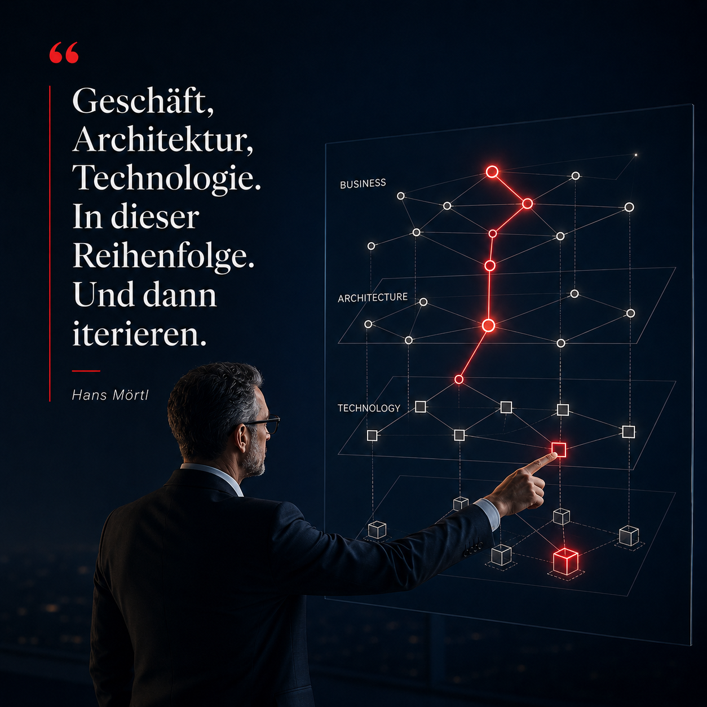

Architekturdenken ist die stille Voraussetzung von Geschwindigkeit.
Lange bevor KI-Agenten zum Alltagsthema wurden, ging es in großen IT-Organisationen um ähnliche Grundfragen: Wie werden Prozesse maschinenverständlich? Wie lassen sich Services, Daten und Entscheidungen orchestrieren? Wie wird Architektur zur Grundlage von Geschäft — und nicht nur zur Beschreibung von Technologie?
Als Senior Manager Processes, Methods & Tools bei DaimlerChrysler haben wir genau daran gearbeitet: mit einem Domänenmodell, einem globalen Portfolio-Management-Ansatz, der Projektmethodik HOUSTON.IT und Architekturprinzipien für komplexe Organisationen. Es ging nie um Technik um ihrer selbst willen, sondern um die Frage, wie ein Konzern schneller vom Geschäftsziel zur funktionierenden Lösung kommt.

2007 entstand in meiner Abteilung die Dissertation von Dr. Michael Herrmann zu semantischen Web Services. Sie wurde später im Kontext des BITKOM Awards „Bestes SOA-Industrieprojekt 2007" ausgezeichnet. In der dazugehörigen Publikation „Real-life SOA experiences" hat Michael mich netterweise als Co-Autor aufgeführt — die wissenschaftliche Arbeit und inhaltliche Tiefe lagen bei ihm.
Die vielleicht wichtigste Erkenntnis damals: Wir haben gesehen, was noch nicht ging.
Zwischen Prozessbeschreibung und ausführbarem Code war noch zu viel Distanz; manche Ansätze wie BPEL waren zu schwerfällig für die praktische Geschäftsrealität. Die Idee war richtig — die Werkzeuge trugen noch nicht.
Heute fällt zusammen, was lange unterwegs war. KI, Agenten, APIs, Automatisierung und moderne Plattformen verkürzen diese Strecke dramatisch: zwischen Idee, Prozess, Entscheidung und Umsetzung liegen nicht mehr zwingend Jahre oder Monate, sondern oft nur noch Wochen oder Tage. Aber wer KI heute klug einsetzt, kommt nicht aus dem Hype. Er kommt aus Architektur — und versteht, dass Transformation immer auch Arbeit an Führung, Organisation und Verhalten ist.
Das ist der rote Faden dieses Denkraums: nicht die neueste Technologie zu feiern, sondern zu verstehen, welche Struktur sie erst wirksam macht.